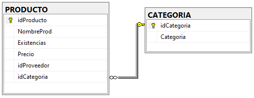
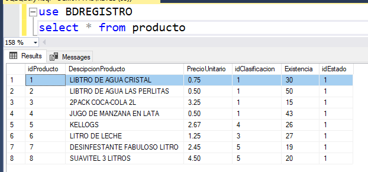
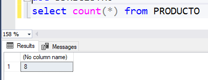
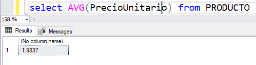
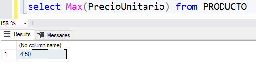
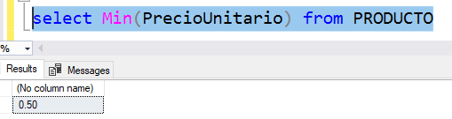
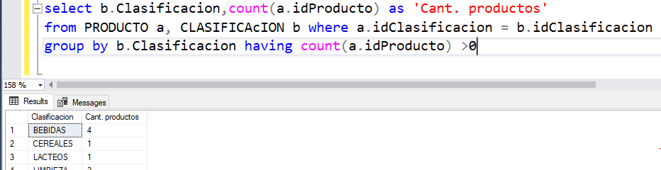
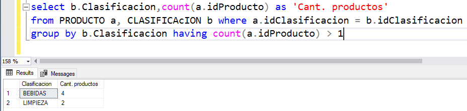

Operadores, funciones generales y funciones de agregación para consultas SQL
3. Funciones de Agregación para consulta SQL
Consulta
GROUP BY
La sentencia GROUP BY se utiliza junto con las funciones agregadas para agrupar en un result-set una o más columnas. Teniendo la siguiente estructura.

SELECT b.Categoria,COUNT(*) as 'Cantidad' FROM PRODUCTO a, CATEGORIA b where a.idCategoria = b.idCategoria group by b.CategoriaPara ejemplificar el uso de las siguientes funciones se toma de base la tabla PRODUCTO, en la cual se cuenta con los siguientes registros.

COUNT()
Devuelve el número de filas que coinciden con un criterio específico.
Ejemplo: Si usamos la función en la tabla PRODUCTO obtenemos.

AVG()
Devuelve el valor promedio de una columna numérica. Esta función puede aplicarse a un campo especifico de la tabla el cual sea de origen numérico. Por ejemplo: en la imagen se le aplica al campo PrecioUnitario.

MAX
Se utiliza para devolver el registro mayor o cantidad mayor de un campo especifico, dentro de una tabla. Ejemplo: Obtener el PrecioUnitario más alto de los productos registrados dentro de la tabla.

MIN
Se utiliza para devolver el registro menor o cantidad menor de un campo especifico, dentro de una tabla. Ejemplo: Obtener el menor de los Precios Unitarios en los productos registrados dentro de la tabla.

HAVING
Es parecida a WHERE, ya que determina qué registros se seleccionan. Cuando los registros se han agrupado utilizando GROUP BY, la cláusula HAVING determina cuáles de ellos se van a mostrar.
Ejemplo 1: Si queremos obtener la cantidad de productos por clasificación mayores a 0

Ejemplo 2: Si queremos obtener la cantidad de productos por clasificación mayores a 1

Obra publicada con Licencia Creative Commons Reconocimiento Compartir igual 4.0